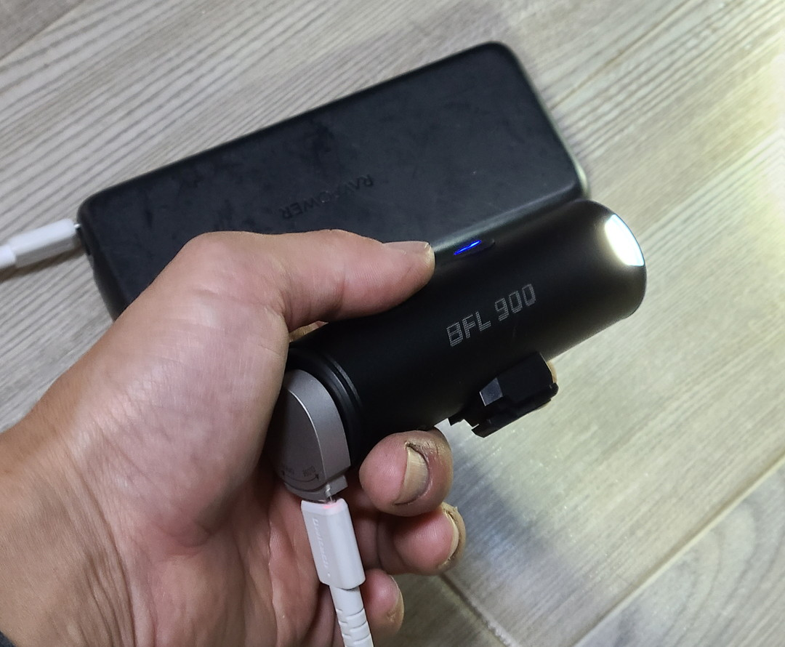
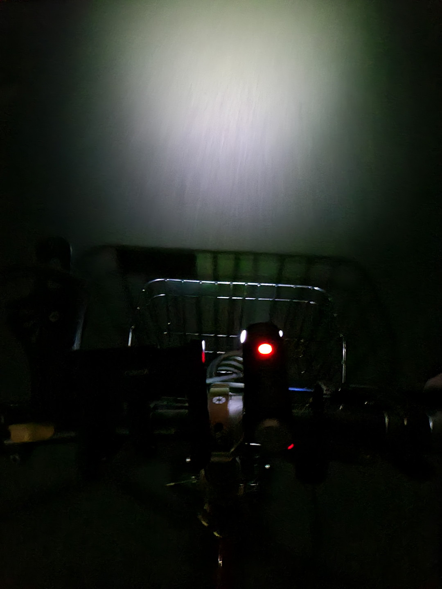
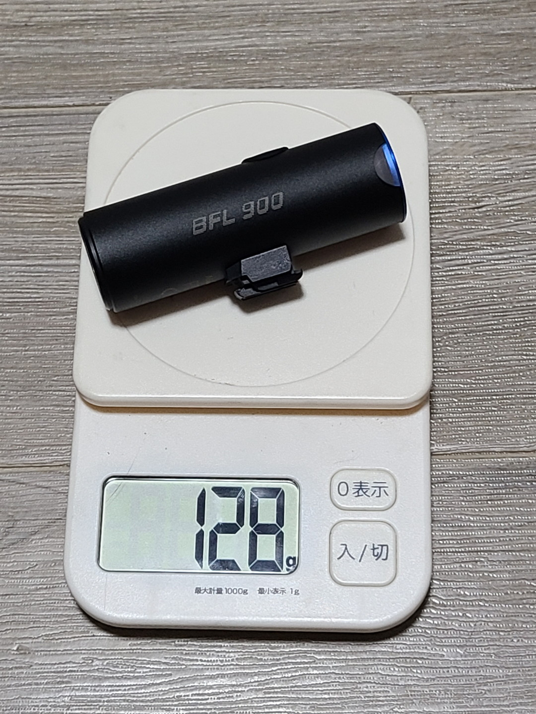
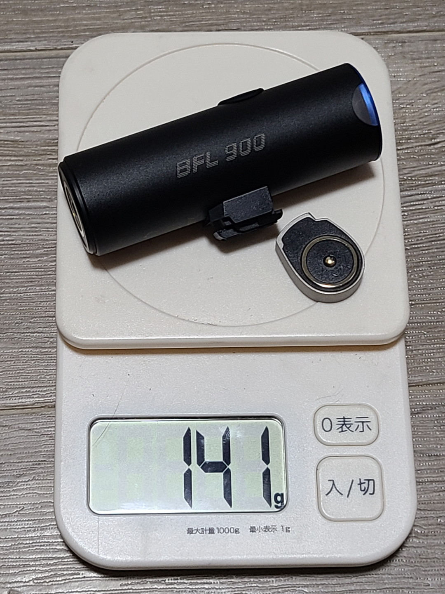
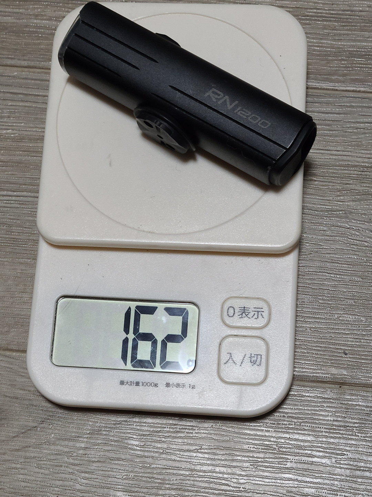
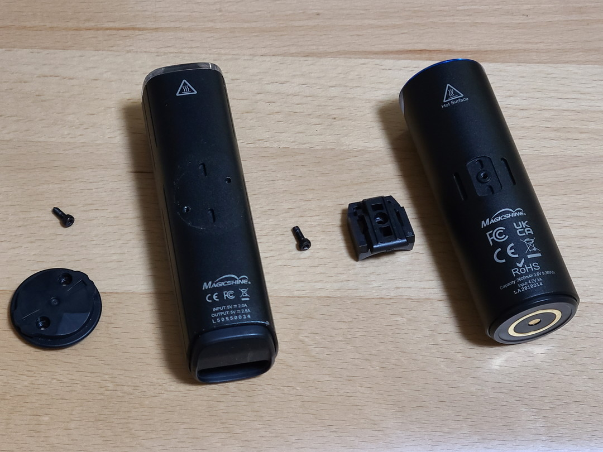
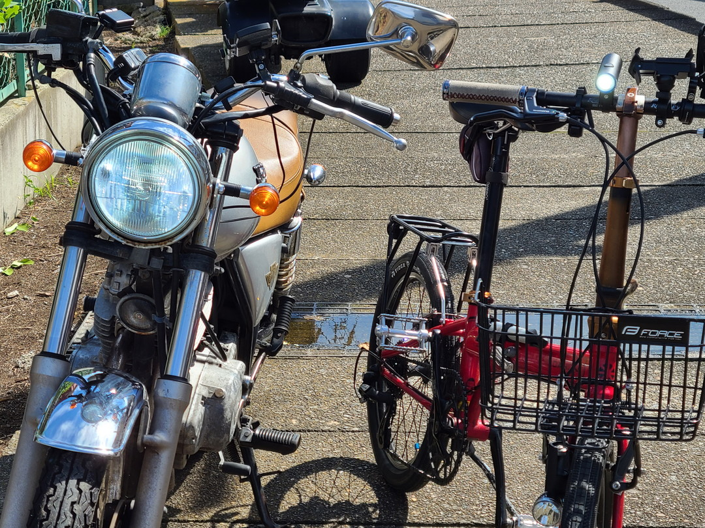
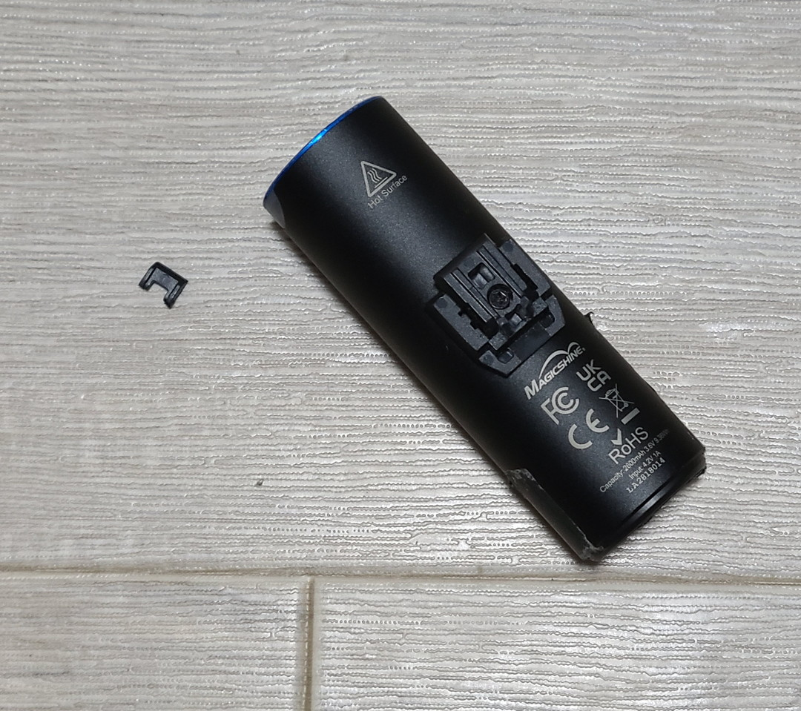
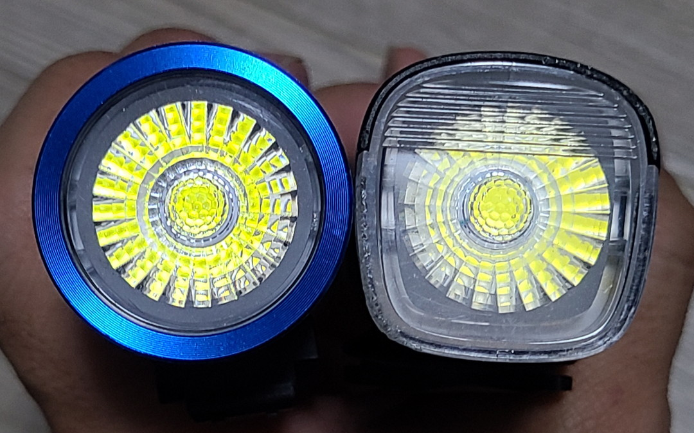
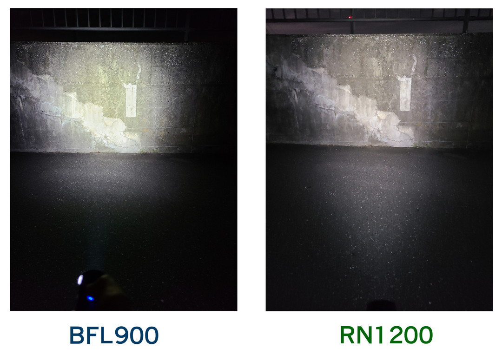

投稿日2022-10-13
Mehr Licht!
「もっと光を！」はゲーテが死に際に放ったとされる台詞だが、自転車に乗るものとして私もこれを叫びたい。この間リムダイナモを設置したがそれはあくまで街乗りの補助であってポタサイをするときにはやはりハンドルバーに取り付けるライトが必要だ。 今まではOlightのRN1200を使っていたのだが、ある日防水キャップが外れるとともにバッテリーが死んでしまったため次を考える必要が出てきた。
BFL900を手に入れた
これ、正直に言うと買ったのではなく、Olightの保証で貰ったものである。最初RN1200を交換してもらおうとしたところ生産終了した（終了早くね）ので代わりRN1500のクーポン発行かBFL900を無料で送るとのことだったので迷ったがBFL900にした。
なぜBFL900なのか
いやちょっと待て君、なぜRN1500じゃないんだ？という声もあるだろう。散々TypeC以外はクソと言ってたくせに独自マグネット無線受電端子とかいう一昔前のS●NYみたいなライトを買うわけがない。実はステマなんだろう。と言われるかもしれない（そもそもこの記事見てる人間どんくらいいるんだ）。だが、RN1500はTypeCでありながら決定的な弱点がある。
モバブからのCtoC充電（給電）ができないこれはリチウムイオンバッテリーでかつTypeCのライトの多くが抱える問題である。なんかRN1500ではできるとかできないとか言われてるがRN1200もできなかったし調べた限り同じ症状の人が多かったから基本CtoC充電できない。
なぜできないのか
オスメス決定戦問題RN1500（というかRNシリーズ）にはモバイルバッテリーモードがついている。切り替えボタンなどなく、自動的にモバブモードに切り替わるよう仕組まれている。そして当然モバイルバッテリーはモバイルバッテリーである。そして最近のモバイルバッテリーはTypeC端子が給電と充電を兼ねている。そんな状況でCtoCのケーブルを接続するとどうなるか。
RN1500「俺がモバブだ」モバブ「はい……」となって雄になったRN1500がいきなりモバイルバッテリーに送電し始めるのである。たまげた。RN1200を初めて充電したとき延々と充電されるどころか生気が吸い取られてるのを見てびっくらこいた。これの解決方法はAtoCケーブルで充電する以外にない。AtoCは送電方向が明確になってるのでこういった混乱は起きにくい。
でもなんでBFL900なの
BFL900はMCC 1A 充電ケーブルというマグネット端子を採用している。これはすでに同社のタクティカルライトやヘッドライトに採用されているもので当然のようにCtoC充電なんてできない。……と思っていた。
これを見つけるまでは！独自マグネット端子をTypeCに変換するアダプターを公式が販売していた。1800円取られるのは癪だが、BFL900にはモバイルバッテリーモードもないし、これでCtoC充電できるのでは！？と思い貰うことにした。
注意事項
アダプターの入力は最大2A（本体自体4.2V 1A）なのでPDに対応しているわけではない点には注意してもらいたい。
あと一応TypeCの規格のルールは厳密に決まっているのでマグネットへの変換が違反になるのかどうかは正直判断がつかない。公式サイトで売ってるものとはいえここから先は自己責任で。
結果
めちゃくちゃ色々端折ると普通にできた。


昼間に通電チェックをしてから夜、バッテリーがからの状態で給電しながら走らせてみた。最大光量はさすがに無理だが問題なく給電されていた。その後、家でモバブとつなげておいたら無事100％まで充電されていた。おそらくBFL1800も同じ手段が使えるはずである。
ただマグネット式なので養生テープとかで固定しないとグルグル回転するのが気になる。
簡単な紹介
製品自体の詳細をまとめてる人はごまんといたので簡単な紹介だけ書いていく。


本体重量は128g、変換アダプター込で141g。

RN1200が162gなのでアダプター込みでも軽量化になっている。ただ光量が違うので参考程度にしかならないか。

今まではガーミン対応のマウントだったのが独自のものになっている。ガーミンマウント自体回転させないと設置できないなどスペース問題で評判が悪かったので改良といえば改良か？ただ裏を返せば汎用性が低くなったとも言える。
個人的にはブラケットの部分がとても嫌いなのでここを改良してほしかった。ちなみに今回のマウントはカチッと音がするまでハメないとライトが脱落する可能性があるから気をつけておいた方がいい。Amazonのレビューにあるようなガタツキはみられなかったのでそういった症状がある人は交換してもらった方がいいかも知れない。
追記
思ったよりブラケットの設置が楽になってたので調べたら改良されていたらしい。BFL1800だが、以下のサイトにRNとの違いが詳しく記載されているので一見の価値あり。

ガーミンマウントを移植できないかと試してみたが根本的にシューの形状やネジ穴の位置が違うため無理そうだった。

比較対象が謎だがバイクのハイビームより明るかった。本当はRN1200の最大光量と比較したかったがモバブを刺さないと点灯できない子になってしまったので今回はなし。
追記その２
2022-10-30

金沢ポタサイで早速使ってみたが停車時風で自転車が倒れてしまいシューの爪が折れてしまった。最終日にめんどくさくて台座につけたままにしてたのもあるけれど、あまり頑丈ではなさそうだ。シュー単体の販売もしていないので
シューを外してネジ穴部分にダクトテープで蓋をして上記のホルダーを使うことにした。別に純正のやつにする必要性はまったくなかったが知り合いのあまりを譲り受けたのでたまたまOlight製のを使うことに。
ただこれ、ゴムで留めているだけなので振動で揺れる揺れる。ていうかもうタクティカルライトで良くないか。とか思ったり思わなかったり。
配光
正直配光に関してはRNシリーズに対してナーフされている。

そもそもライトの形状がだいぶ違う。スペック表にもある通り防眩機能がなくなっているのに加え下半分が丸みを帯びているため、配光はRNシリーズを期待するとがっかりするかもしれない。ただ、この形状なら逆さに設置しても問題なさそうではある。

RN1200がモバブ経由じゃないと機能しないのに加え、スマホが明るさを自動補正してしまうため、あまりあてにならないかもしれないが比較。配光に関してはやはりBFL900のほうが範囲が狭く、タクティカルライト寄りになっている。走行時にも気になったが特に下方面に対する光が弱い。
その他
RN1200に比べて一長一短と言った感じだった。防水性能もIPX6へダウンしているのは少し気になる※追記しました。まあ6も有れば十分かもしれないが。暴発ロック機能はRN1200と同じで長押しでON,OFFを切り替える。ちなみにポーチに入れてたら早速光ってたので今回も意味はない模様。
とはいえやはり間接的にでもCtoC充電ができるのは大きい。自分なんかは自転車のモバイルバッテリー機能なんてなくても良いと思ってるのでCtoC充電は最優先事項である。ここらへんはライドスタイルにもよるところなのでRNシリーズかBFLかどっちが合うのかよく考えてから買ったほうがいいだろう。
配光重視ならRN、CtoCならBFLというのが個人的な意見だ。ということでよいライト沼を。ではまた～。
追記 防水性能について
2022-10-20
IPX7はIPX6の上位互換だと思い込んでいたが違ったようなので追記しておく。
このサイトにあるようにIPX6までとIPX7以降はテストの方式が違う。アウトドアグッズを考えると
このようにIPX6の試験方法の方が理にかなっている。Olightが意図しているかどうかは知らないが問題はなさそうだ。